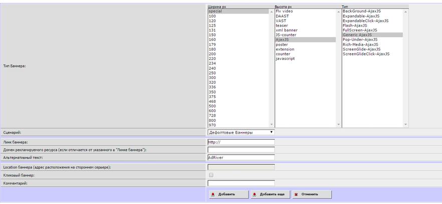
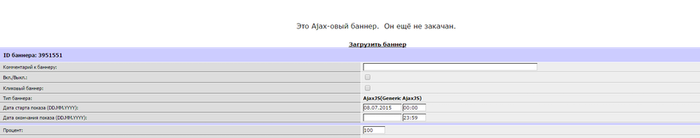
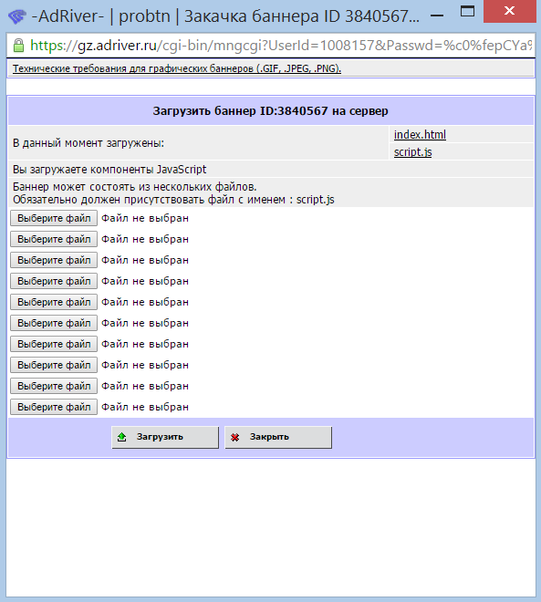

Интеграция с AdRiver¶
Интеграция с AdRiver (баннер javascript/JavaScript)¶
Для такого рода интеграции, необходимо произвести следующие действия:
Step0¶
Создать кампанию (или апп с необходимым доменом, будь то реальный домен или домен-идентификатор аппа)


Step2¶
Сохранить код баннера https://cdn.probtn.com/custom_include/script.js, затем загрузить его (нажав на ссылку “Загрузить баннер”)
Интеграция с AdRiver с модифицированным кодом¶
Для такого рода интеграции, необходимо произвести следующие действия:
Step0¶
Создать кампанию (или апп с необходимым доменом, будь то реальный домен или домен-идентификатор аппа)
Step1¶
Создайте страницу, доступную по адресу с тем же доменом, где вы хотите показывать кнопку.
Добавьте на страницу showinparent_concat.js ( Общее описание работы кнопки )
<script src="//cdn.probtn.com/showinparent_concat.js"></script>
Например:
<!DOCTYPE html>
<html>
<head lang="en">
<meta charset="utf-8">
<meta name="viewport" content="width=device-width, initial-scale=1">
<title>probtn (hackpad)</title>
</head>
<body>
<script src="//cdn.probtn.com/showinparent_concat.js"></script>
</body>
</html>
Step2¶
Создать AjaxJS (Generic AjaxJS) баннер
Step3¶
Загрузить код баннера (нажав на ссылку “Загрузить баннер”)
Пример кода для generic ajax баннера https://www.dropbox.com/s/vo4deq8g9e9yynp/generic_ajaxjs.zip?dl=0
Step 4¶
В нем необходимо изменить в index.html путь до showinparent.html (создан на шаге 1)
<iframe style="border: 0px; width: 0px; height: 0px; display: none;" src="http://example.com/showinparent.html"></iframe>
или
<iframe style="border: 0px; width: 0px; height: 0px; display: none;" src="http://example.com/showinparent.html?domain=nessasary_example_app_domain.test"></iframe>
Url //example.com/showinparent.html?domain=nessasary_example_app_domain.test добавлен для примера, необходимо использовать свой путь (до страницы созданной на шаге 1)
GET параметр domain опционален, и необходим в случае, если нужно жестко задать домен, для которого будут браться настройки из admin.probtn.com
Также значение GET параметра domain (для примера указано)nessasary_example_app_domain.testнужно заменить на необходимый домен (идентификатор), используемый в нужном аппе в admin.probtn.com
Указание кампании (опционально)¶
Также возможно указать идентификатор кампании, по которому кнопка будет показывать креативы только указанной кампании для аппа.
Для этого необходимо создать объявление с кодом
<iframe style="border: 0px; width: 0px; height: 0px; display: none;" src="//example.com/example_iframe_page.html?domain=nessasary_example_app_domain.test&SelectAdSet=565e021f99c27511100000d0"></iframe>
Url //example.com/example_iframe_page.html добавлен для примера, необходимо использовать свой путь (до страницы созданной на шаге 1) Значение GET параметра domain (для примера указано) nessasary_example_app_domain.test нужно заменить на необходимый домен (идентификатор), используемый в нужном аппе в admin.probtn.com
Значение GET параметра SelectAdSet (для примера указано) 565e021f99c27511100000d0 нужно заменить на идентификатор кампании (не нужно указывать идентификатор placement или creative)
Сам идентификатор можно найти в адресной строке, открыв страницу кампании.